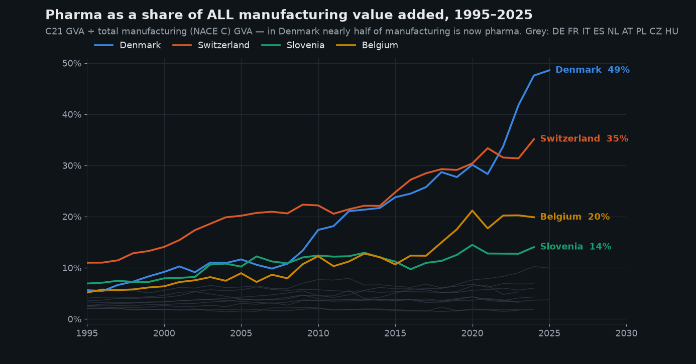
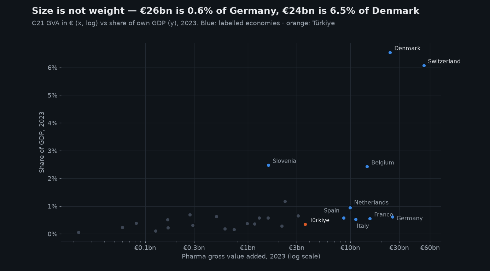
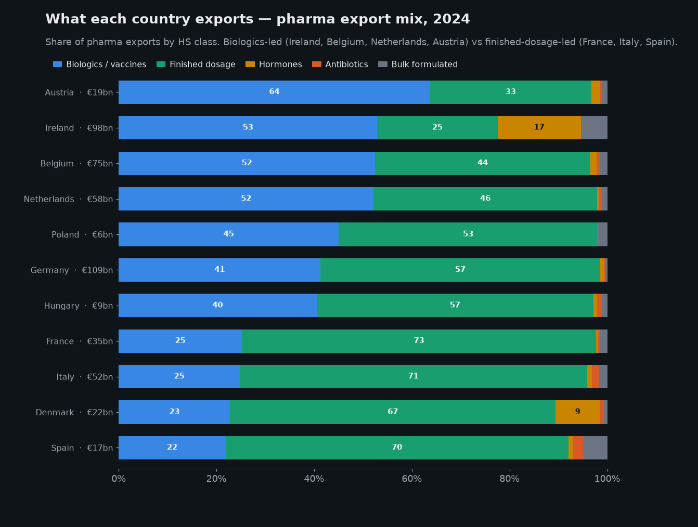
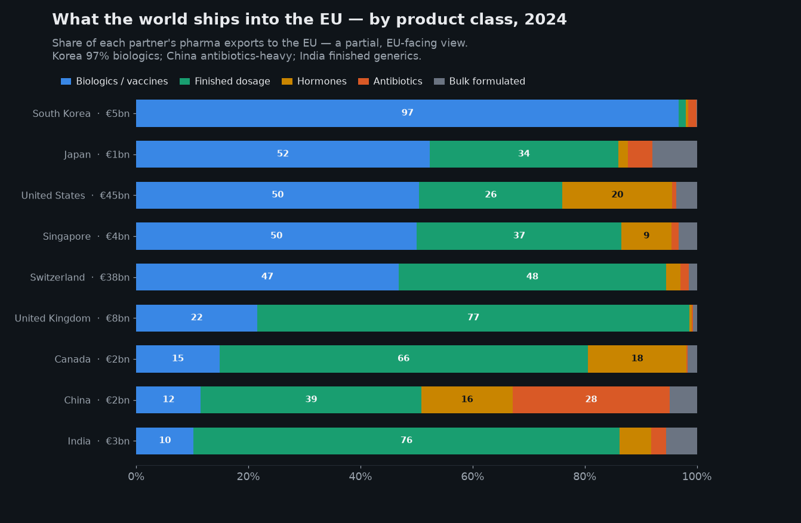
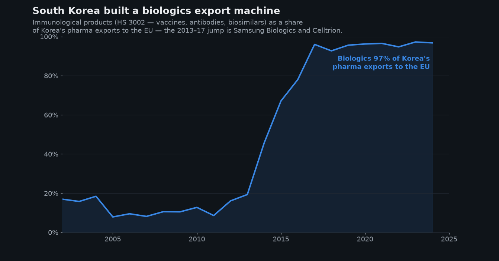

The pharma states. How big pharma is inside an economy, what it makes, and who earns it.
How big is the pharmaceutical industry inside a national economy? The question turns out to have four answers, not one. Across 42 countries and 35 years of national accounts, pharma is about 1% of output almost everywhere — and 7–17% in a handful of small economies that let one industry become the economy. Trade data then names what each of them actually makes, and national income data shows who ends up with the money. Every figure is built from published statistics through an open pipeline in this repository.
What this study asks
- How big is it? — pharma's share of the economy, 42 countries, 35 years.
- Where does it concentrate? — why the same industry moves one country and not another.
- What do they actually make? — vaccines, antibodies, and the GLP-1 active substance.
- Who earns it? — production and profit are not in the same place.
How to read the numbers
- Two denominators, both used, always labelled.
- Share of GDP and share of total value added differ by roughly a tenth, because GDP adds product taxes on top of value added. Denmark is 8.7% of GDP and 9.8% of value added — the same fact on two bases. Cross-country comparisons here use value added, because that is what both data sources publish.
- Ireland appears on two series.
- Eurostat stops publishing Irish pharma value added after 2014 for confidentiality; the OECD continues it. Charts use Eurostat up to that point and the OECD after it. Irish shares also step up in 2015 with the national-accounts restatement.
- Trade data is a proxy for production, not a measure of it.
- Export value is gross, and distribution hubs re-export goods they never made. Where that matters it is tested and stated — Slovenia is excluded for it, Ireland passes the test.
- Product codes are chemical families, not brands.
- HS 2937.19 contains every peptide-hormone analogue. Read it as the GLP-1 and insulin substance class, never as one product or one company.
At a glance — the six countries this study keeps returning to
| Country | Share of economy | Mainly makes | Exports | Largest market | Income kept |
|---|---|---|---|---|---|
| Ireland | 16.7% | Peptide hormones (GLP-1 substance), antibodies | €93bn | United States 47% | 75% |
| Denmark | 9.8% | Detail withheld — insulin and GLP-1 codes suppressed | €22bn | not published | 103% |
| Switzerland | 6.9% | Even split, biologics and finished dose | €38bn* | — | 93% |
| Belgium | 2.5% | Vaccines (€20bn), antibodies | €74bn | United States 25% | 102% |
| Germany | 0.7% | Small molecules, antibodies, plasma | €108bn | — | 104% |
| Türkiye | 0.34% | — | — | — | — |
Share of total value added, most recent year per country. Income kept is gross national income as a share of GDP: below 100% means income generated in the country accrues to owners abroad. *Switzerland's trade figure is exports to the EU only; Türkiye is outside the trade dataset used here.
How big is it?
The answer is remarkably uniform — and the exceptions are the whole story.
1. Two Europes — the flat mass and the risers
Start with the whole picture: every country's pharma manufacturing value added as a share of its own GDP, every year since 1995.

The grey mass is the honest headline for most of the continent: in the median European country pharma manufacturing is about half a percent of GDP — 0.54% in 2023 — and that number has barely moved in thirty years. The big four economies are all in the mass: Germany went 0.52% → 0.61% since 1995, France 0.60% → 0.55%, Italy 0.50% → 0.53%, Spain 0.54% → 0.58%. Thirty years of blockbuster drugs, biotech waves and COVID, and pharma's weight in Europe's large economies is exactly where it started.
And then there are the risers. Denmark went from 0.8% of GDP to 8.7% — a tenfold gain in weight, with more than half of it arriving in just three years (+35%, +49%, +35% year-on-year growth in pharma value added in 2022–24 — the GLP-1/Ozempic years). Switzerland climbed from 2.1% to 6.7% over the same period — slower, steadier, and driven by two giants rather than one. Slovenia (2.7%) and Belgium (2.3%) are the quieter members of the club.
2. Beyond Europe — the Americas and Asia-Pacific join the chart
Is the "flat mass below 1%" a European quirk? OECD STAN publishes the same industry (ISIC C21) against the same denominator for the OECD world, and the two sources agree almost perfectly where they overlap — 10 of 11 dual-covered countries match to within a rounding error. Merging them (each country at its most recent available year, labelled on every bar):

The answer: no country outside Europe reaches even 1%. The United States — home of the world's largest pharma companies by revenue — keeps pharma manufacturing at 0.87% of its economy; the United Kingdom at 0.95%, South Korea 0.77%, Japan 0.66%, Canada 0.27%, Australia 0.17%. And these are not snapshots that might have caught a bad year:

This sharpens the European story instead of diluting it. A big diversified economy keeps pharma near 1% — apparently a law of large economies, holding from Washington to Tokyo for three decades. The 5–17% weights exist only in small economies that let one industry become the economy: Ireland, Denmark, Switzerland. Concentration, not pharma, is the phenomenon.
Türkiye sits at 0.34% of total value added — mid-table in absolute size but bottom-third in weight. TurkStat delivered the detailed sector figure to Eurostat for 2023 only, where it reads 0.35% of GDP and €3.6bn of value added, more than Austria or Poland produce. The OECD carries the back-series Eurostat lacks (2003–2021), and it settles the question a single year cannot: the weight has been essentially flat for two decades — 0.49% in 2003, 0.34% in 2021. This is a plateau, not a young sector's first reading.
What this section honestly cannot show: China, India and Brazil. They are not in OECD STAN, and no source publishes pharma manufacturing value added against a national-accounts total on the same definition for them — India's official series covers only registered factories, China publishes gross output rather than value added. Any "pharma share of China's GDP" figure you see quoted is built on a different measure, and does not belong on this chart.
Where does it concentrate?
Sector size and economic weight are different things, and only one of them moves a country.
3. The sharper lens — pharma as a share of all manufacturing
Share of GDP understates how concentrated this story is, because GDP is mostly services everywhere. Divide pharma by manufacturing value added instead and the concentration becomes hard to overstate:

4. Size is not weight — the Germany paradox
A ranking by share hides that the biggest pharma producers are still the big economies. Put absolute size (in euros, log scale) against weight in the domestic economy:

In 2023 Germany and Denmark produced almost exactly the same amount of pharma value added — €26bn and €24bn. In Germany that is 0.61% of the economy; in Denmark it is 6.5%. The exact same industry is a rounding error in one country and the national growth engine in another. That asymmetry — not the size of the industry — is what decides how much a country's macro numbers, currency and politics move when one molecule succeeds or fails.
What do they actually make?
Trade data names the medicine: vaccines, antibodies, and the GLP-1 active substance.
5. What kind of medicine? — biologics vs pills vs active ingredients
"How big" and "how concentrated" still don't say what comes out of these factories. The value-added series can't — but trade data can, as a proxy. Every pharma shipment is filed under an HS product class, so the mix of what a country exports is a readable fingerprint of what it makes: biologics and vaccines (HS 3002), finished dose medicines (3004), bulk formulations (3003), hormones (2937), and antibiotic active ingredients (2941).

The same lens turns outward. Reading what each non-EU country ships into the EU (a partial view — it misses their sales elsewhere) still separates the strategies cleanly:


6. Naming the medicine — vaccines, antibodies, and the GLP-1 substance
"Biologics" and "finished dose" are customs chapters, not medicines. The 6-digit trade codes name the product, and at that level the leaders stop resembling each other entirely:
- Belgium is Europe's vaccine plant. €20bn of human vaccines in 2024 — and €43bn at the 2022 peak, the Comirnaty years, when a single production site accounted for more export value than Denmark's entire pharmaceutical industry.
- Ireland's largest single class is now bulk peptide hormones (HS 2937.19) — the active substance behind GLP-1 and insulin-analogue medicines. It went from €0.5bn in 2018 to €16.7bn in 2024, a thirty-fold increase in six years. Not a bigger pharma industry: a different one.
- Germany spreads. €31bn of therapeutic antibodies, €10bn of plasma products, €53bn of small-molecule medicines — the diversified profile of a large economy, and the reason no single class moves its GDP.
- Denmark publishes almost nothing. It withholds the insulin (3004.31), other-hormone (3004.39) and other-medicament (3004.90) codes entirely, and only 14% of its exports have a named destination. Every other country in the comparison publishes all three.
Destination data sharpens the risk picture. 47% of Irish pharmaceutical exports go to the United States — €44bn, the largest single bilateral pharmaceutical flow in this dataset, and the reason US tariff policy is an Irish macroeconomic variable rather than a sectoral one. Belgium sends 25% to the US. Denmark's exposure cannot be measured from published data at all.
Who earns it?
Where a medicine is manufactured and where its profit lands are not the same place.
7. Made here, earned elsewhere — production is not income
One objection deserves a direct answer. If Ireland manufactures the active substance, does Ireland actually get the money? Trade and value-added data record where medicines are made. They say nothing about who ends up with the earnings.
Two tests. First, is Ireland really producing, or just routing? Its imports of the same product class are essentially zero against €16.7bn of exports — nothing is coming in to be re-shipped, so the transformation happens on the island. The unit value is roughly €0.9m per kilogram, the order of magnitude of a peptide active substance rather than a bulk chemical. And 83% of it goes to the United States (€13.8bn in 2024, against 99% to Switzerland in 2018): a supply chain feeding a US-headquartered finisher, not a Danish one.
Second, where does the income land? Gross national income answers it — GDP plus what a country's residents earn abroad, minus what foreign owners earn inside it:

This is why Ireland's 16.7% should be read as an exposure figure rather than a prosperity one, and why the Irish statistical office publishes a modified national income measure alongside GDP. It also sharpens the concentration argument: Denmark's 9.8% is domestically owned and its earnings come home, which is a materially different position from hosting someone else's plant — more upside, and more exposure to a single company's pipeline.
What this does not establish: which firms. Trade codes carry no company names, HS 2937.19 contains every peptide-hormone analogue rather than one product, and the GNI gap covers all foreign-owned activity in Ireland — pharmaceuticals, technology and aircraft leasing together — not pharmaceuticals alone.
What to do with this — three readings
- If you analyse economies: never quote "pharma's share of GDP" as one European number — the median (0.54%) and the pharma states (6–9%) are different universes. And check Denmark-style concentration before trusting any Danish, Swiss or Irish macro aggregate: through 2026, ex-pharma GDP is the more informative series. What would change this: two consecutive years of Danish pharma GVA growing slower than Danish GDP.
- If you work in pharma strategy: the risers are supply-side stories — a country can multiply its pharma weight in a decade (Denmark did it twice over). Watch Slovenia and Hungary as the next candidates: both already carry 2–7× the manufacturing share of their GDP peers. What would change this: C21 share of manufacturing stalling below 15% for Slovenia through 2027.
- If you read this from Türkiye: the sector is mid-sized in euros but underweight at home (0.35% of GDP vs the 0.54% median) — and the OECD back-series removes the optimistic excuse: this is not a young sector still ramping, it has held 0.3–0.5% for two decades while Korea, a fair peer, climbed from 0.68% to 0.77% and built global biosimilar champions. The gap is strategy, not statistics — though TurkStat publishing C21 for 2022+ (the OECD series stops in 2021) is still worth asking for.
Sources. Eurostat nama_10_a64 (gross value added by
A*64 industry, NACE C21 = manufacture of basic pharmaceutical products and
pharmaceutical preparations; and NACE C = total manufacturing) and
nama_10_gdp (GDP at market prices), annual, current prices, million
units of national currency; EUR versions used only for cross-country size, never
for shares. Span used: 1995–2025 (2024–25 values are first releases and may be
revised). Data fetched 4 Aug 2026 via scripts/fetch.py; every figure
on this page is reproducible from data/pharma-share.json in this
repository.
Caveats — read before quoting. NACE C21 is pharma manufacturing only: it excludes pharmacies, wholesale, and R&D booked in separate service-sector entities, so this measures where pharma production value sits, not the industry's full footprint. No deflator is needed — each share is nominal-over-nominal in the same currency, so inflation and exchange rates cancel. Denmark's figures include value added from production Danish companies contract out abroad ("factoryless" production counts in Danish national accounts) — the share is genuinely in Danish GDP, but the factories are not all in Denmark. Ireland: Eurostat suppresses C21 after 2014 (confidentiality — the sector is dominated by a handful of firms); its dashed line ends honestly. Iceland: published C21 value added is negative from 2017 and is excluded. Türkiye: 2023 only, as delivered to Eurostat. Norway's coverage starts 1975 but its pharma sector is tiny (0.16%).
The world extension (section 5). OECD STAN
(DSD_STAN@DF_STAN_2025): ISIC C21 value added ÷ total-economy
value added, current prices, national currency — the like-for-like denominator
both sources publish, so world bars are shares of total value added,
which run slightly higher than shares of GDP (GDP adds product taxes on top).
Validation: of 11 countries in both sources, 10 agree within ±0.15 pp
at matched years. The exception is Switzerland (OECD 4.8% vs Eurostat 6.5% in
2022) — the chart keeps the Eurostat figure and you should treat the Swiss level
as uncertain within that range. Ireland and Türkiye switch to the OECD series
(Eurostat suppresses or lacks them). Excluded as collection breaks, not
economics: New Zealand (C21 drops 299→11 MNZD between 2017 and 2018) and
Colombia's 2020–21 observations (4,315→193→1,222→5,422 bn COP).
Each country is shown at its most recent available year, 2020–2025, labelled on
the bar — reproducible from data/pharma-share-stan.json.
Therapeutic detail (section 7). Same Comext dataset at HS
6-digit: 2937.19 (polypeptide, protein and glycoprotein hormones and their
analogues, in bulk — the class containing GLP-1 and insulin analogues as
active substance), 3002.41 (vaccines for human medicine), 3002.15
(immunological products in measured doses — therapeutic antibodies), 3002.12
(antisera and blood fractions), 3004.31 (medicaments containing insulin),
3004.39 (medicaments containing other hormones — GLP-1 in finished form) and
3004.90 (other medicaments). A 6-digit class is a chemical family, not a
brand: 2937.19 contains every peptide-hormone analogue, so read it as the
GLP-1-and-insulin substance class rather than as one product. The
"not published" residual is the gap between a country's HS4 chapter total and
the sum of its published 6-digit detail; for Denmark that residual is €15.6bn
of €21.6bn. Reproducible from data/pharma-therapeutic.json via
scripts/pharma_therapeutic.py.
Production and income (section 8). The re-export test uses
Comext imports and exports of the same code: Irish imports of HS 2937.19 round
to zero against €16.7bn of exports, so the flow is not transit. Unit values
come from the quantity indicator (100kg units) and are order-of-magnitude
checks, not prices. Gross national income is Eurostat
nasa_10_nf_tr (B5G, total economy, national currency) against GDP
from nama_10_gdp, same vintage and currency. The GNI gap is
economy-wide: Ireland's 25-point gap reflects all foreign-owned activity, of
which pharmaceuticals are one part — it is not a pharmaceutical-specific
number, and is used here only to show the direction of income flow.
The product mix (section 6) is trade, not production. Eurostat
Comext DS-045409, external trade by HS class, value in EUR: HS 3002
(immunological products — vaccines, antisera, monoclonal antibodies), 3004
(medicaments in measured doses / retail packs), 3003 (bulk medicaments), 2937
(hormones, incl. insulin), 2941 (antibiotics). EU/EFTA rows are exports to the
world (a country's own output mix); non-EU rows are exports to the EU only
— a partial, EU-facing view that misses a maker's sales to the rest of the world.
Trade is a proxy for what is made, not a measure of it: export value is
gross (a €1 vaccine that embeds €0.40 of imported ingredients still books €1), and
hubs re-export goods they did not make. Slovenia is excluded for exactly this
reason — its dosage "exports" jump from €2.8bn (2018) to €23bn (2024), routing not
production, while its value-added share is a modest 2.8%. GLP-1 and insulin
products straddle HS 2937 and 3004 depending on form, so read the Danish hormone
slice as a floor, not a total. Reproducible from
data/pharma-product-mix.json.
Want the pipeline, or this analysis for another sector? Get in touch.